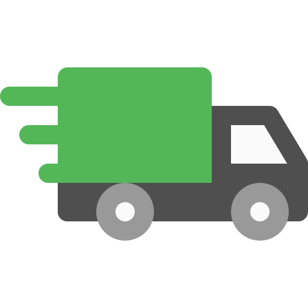
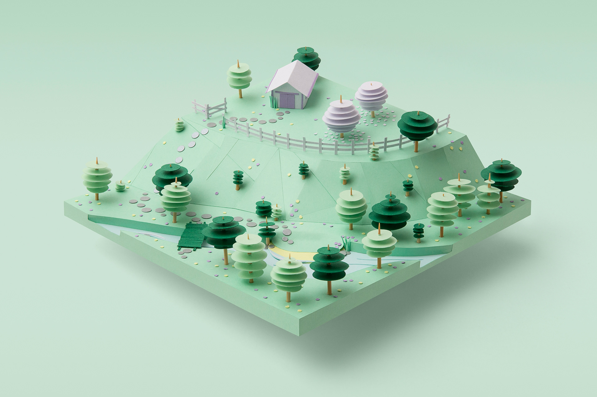

AGRO
+7 (999) 999 999
+7 (999) 999 999
Ecolobot, robot autonome intelligent, nettoie sols et eaux pollués, détecte contaminants, protège biodiversité, idéal pour industries et collectivités durables.
Notre société s'investit dans la protection de l’environnement et propose des services innovants, durables et responsables pour réduire leur impact écologique quotidien.
Engagement perpétuel pour l’environnement.

Efficacité en un temps dévolu.

Respect du vivant naturel.

Prestation axée sur l’énergie durable.
Nous mettons en place des points de collecte adaptés, sensibilisons les usagers au tri sélectif et collaborons avec des centres de traitement locaux pour transformer les déchets recyclables en nouvelles ressources, réduisant ainsi l’enfouissement et l’empreinte carbone globale.
Nous réalisons des audits énergétiques personnalisés, identifions les sources de gaspillage, recommandons des équipements performants et accompagnons la mise en œuvre de solutions durables. L’objectif est d’optimiser la consommation, réduire les coûts et limiter l’impact environnemental des bâtiments.
Nous concevons des programmes éducatifs interactifs, organisons des sorties nature et collaborons avec des associations locales. Nous sensibilisons le public à la préservation des habitats naturels, à l'importance des écosystèmes et à la protection des espèces en voie de disparition. .
Nous proposons l’installation de dispositifs économes comme les réducteurs de débit, récupérateurs d’eau de pluie et systèmes de réutilisation des eaux grises. Nous sensibilisons également à une consommation responsable pour préserver cette ressource essentielle face au changement climatique.
Nous accompagnons les entreprises dans la mise en place de plans de mobilité durable, favorisons l’usage de véhicules électriques, le covoiturage et les transports doux. Nous proposons des solutions adaptées pour réduire les émissions liées aux déplacements professionnels quotidiens.
Nous soutenons les agriculteurs dans leur transition vers l’agriculture biologique en offrant conseils techniques, formations, et appui à la certification. Nous promouvons des méthodes respectueuses des sols, de la biodiversité et de la santé des consommateurs comme des producteurs.
Nous aménageons des ateliers ludiques et interactifs dans les écoles, centres sociaux et collectivités. Nous sensibilisons les jeunes aux enjeux climatiques, au recyclage, à la biodiversité et aux gestes écoresponsables, afin de former des citoyens engagés pour l’environnement.
